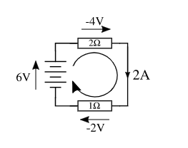
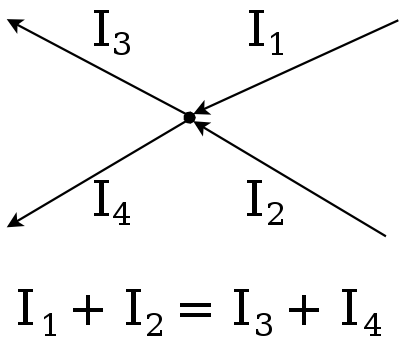

Electronics & programming

Voltage (potential difference) is the electrical potential between 2 points, measured in Volts.

Current is the rate of flow of electrical charge at a point, measured in Ampere.

Resistance is the measure of the opposition to current flow in an electrical circuit, measured in Ohms.
Ohm's law.

Voltage(V) = Current(I) * Resistance (R)
Ohm's law equation is useful in determining the appropriate resistor value to use to prevent damage to electrical components.
We made double ended alligator clip wires in order to provide a power source to our test board. It also serves as soldering practice.
We are provided with a meter of multicore 2 way cable. We split the ends and use a wire stripper to expose a bit of the wires.
Red wire stripped, black not stripped yet.
Next is wire tinning. This will hold the thin strands together and make it easier to connect the wire to other connectors. We prepare the wire for soldering by dipping it in flux, then using a soldering iron, melt a blob of solder onto the iron tip and spread it along the exposed wire.


First tinned the red wire, after which I cut a bit of the end off before repeating on the black wire.

Next is connecting the alligator clips. I first remove the rubber cover and slip it through the cable, making sure the colours match with the cables. I also sand the hole on the clip with sandpaper to prepare for soldering.

I then slip the bare wire into the hole of the alligator clip, and using pliers bend the back onto the cable to secure it to the clips. I then bend the cable flat and added some flux and solder the holes.
I also noticed the black clip is smaller than the red clip, So I double checked the rubber cover can fit the clip before soldering.

After this is just simply placing the cover over. I did this by using another clip to keep the mouth open so the cover can be slid in.

I then solder the other end with another pair of clips.